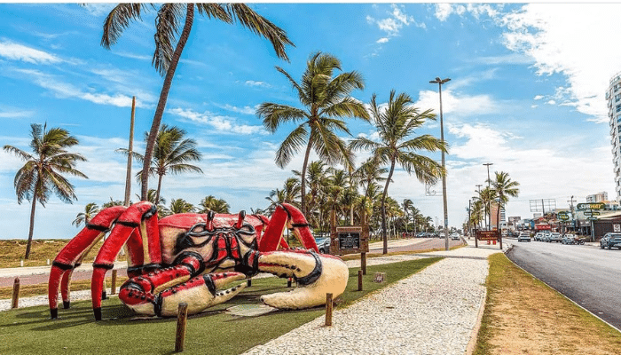

Aracaju

Fundação: 17 de março de 1855 (168 anos)
Aracaju é a capital do estado de Sergipe, na costa nordeste do Brasil. É conhecida pelas praias, incluindo a Praia de Atalaia, ao centro. Junto à praia, o Oceanário de Aracaju, em forma de tartaruga, possui arraias, tubarões, enguias e tartarugas marinhas, além de exposições práticas. O passeio na marginal, a Passarela do Caranguejo, está repleta de restaurantes de peixe e marisco e é marcada por uma enorme escultura de um caranguejo
